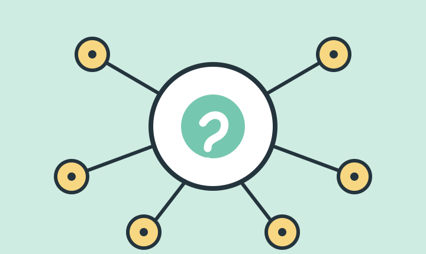
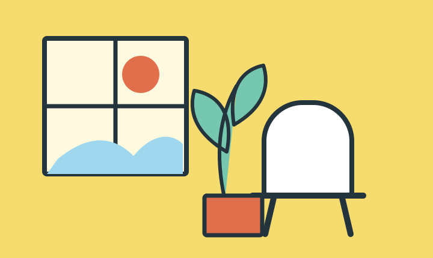

AI GUIDE
LIFE DESIGNLatest articles
毎日の仕事を軽くする「やらないことリスト」の作り方
予定を増やす前に、まず減らす。集中力を取り戻すために僕が見直した、3つの小さなルールを紹介します。
READ MORE道具を増やさず、ひとつのメモアプリを使い切る
便利なアプリを探し続けると、情報は逆に散らかります。記録、整理、実行をひとつにまとめるシンプルな運用方法です。
READ MORE文章を書く前に、AIと10分だけ話してみる
完成文を任せるのではなく、考えを整理する相手として使う。自分の言葉を失わないAI活用の入り口をまとめました。
READ MORE続けるために必要なのは、強い意志より静かな仕組み
調子がいい日を基準にしない。忙しい日でも続けられる最小単位を決めると、習慣はずっと扱いやすくなります。
READ MORE